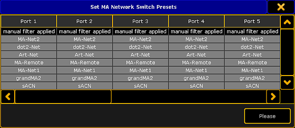

It is useful to apply presets to ports for a higher network performance or for safety reasons, e.g. to block Telnet.
A preset contains collection of filters. For more information about filter see the MA Network Switch manual.
Presets are used to allow or to block the selected output.
If a preset is set to allow (= green), the network packets matching the filters in the preset are allowed. All other network packets not matching the filters of this preset, will be blocked.
If a preset is set to block (= red), the network packets matching the filters in the presets are blocked. All other network packets not matching the filters of this preset, will be allowed.
Important:
Presets are applied in the outbound as well as in the inbound network traffic of the specific physical connector.
Important:
If manual filters are assigned to a port an assigned preset will delete the previous assigned filter from the port.
Open the MA Network Configuration.
- Press Setup, and tap under NetworkMA Network Configuration.
The MA Network Configuration window opens.
Tap at Network Switch.
MA Network Configuration - Network Switch
Tap at a cell in the row of the MA Network Switch you like to edit and tap Edit Preset.
The Set Switch Presets pop-up opens.

Set Switch Presets pop-up
Navigate to the to be edited port.
To block the preset press the screen encoder once until the background of the preset cell is red.
To allow the preset only press the screen encoder twice until the background of the preset cell is green.
Press Please or tap Please.
The preset is assigned to the port and saved in the startup configuration. The filter icon is visible in the port cell and on the front end display of the MA Network Switch.